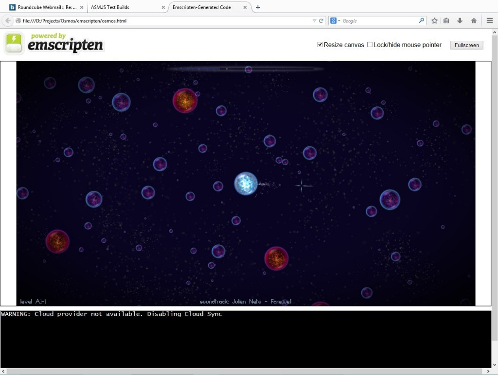

你是資深的 App 開發者，手上已有一堆酷炫遊戲等著要接觸更多消費者嗎？在看完《運用 Emscripten 移植遊戲 (上)》與《(中)》之後，當然應該把全文看完，讓自己更了解 Emscripten 這個強大的移植工具！如果你剛加入這系列文章，也歡迎透過上方兩篇文章的連結，閱讀完整的遊戲移植撇步喔！
Part 2 ： Emscripten 本身
所以現在連上線了。但在瀏覽器中載入遊戲時，整個畫面暫停不動，沒多久之後瀏覽器告知指令碼暫停並刪除。
出了什麼問題？
桌機版遊戲具有一組事件迴圈，可進行輪詢輸入 (Poll input)、模擬狀態、繪製場景，直到中斷迴圈為止。而到瀏覽器上時，則是交由瀏覽器以回呼 (Callback) 進行同樣作業。因此若要讓遊戲運作，就必須將迴圈重構成回呼。而 Emscripten 中可用「emscripten_set_main_loop」函式完成設定。還好在大多數條件下都能輕鬆完成轉換。最簡單的方式，就是將迴圈的主體重構成為「helper」函式，接著在桌機版遊戲的迴圈中呼叫該函式，並在瀏覽器中設定該函式為回呼。或者你用的是 C++11，也能使用「lambda」並將之儲存於 std::function 之中。接著就能新增小型的「wrapper」以呼叫之。
但如果你有多個獨立迴圈 (如載入畫面) 就會發生問題。這種情況必須 1). 重構這些迴圈成單一迴圈，或是 2). 逐一呼叫這些迴圈、設定一組新的迴圈，再以 emscripten_cancel_main_loop 刪除之前的迴圈。但這兩種方法都很複雜，而且須大幅更動你的程式碼。
現在遊戲可執行了，但你會收到找不到外部檔案的一堆錯誤訊息。下一步就是把你的外部檔案添加到封包裡面。最簡單的方法就是重新載入。若將 --preload-file <filename> 這個開關添加到連結選項中，Emscripten 就會將該檔案加入到某個 .data 檔，並自動在「main」之前就預先載入此 .data 檔案。後續可用標準 C/C++ 的 IO 呼叫來存取這些檔案。Emscripten 則會負責必要的程序。
但如果你的外部檔案很多，上述方法就會發生更多問題，像是必須先載入整個封包再啟動程式。但如此會耗上很長的載入時間。這時可以串流某些外部檔案 (如音樂或影片) 來避免此情形。
如果你的桌機版程式碼已經具備了「非同步載入」的機制，則可重複使用。Emscripten 具備 emscripten_async_wget_data 函式，可非同步載入資料。但請記得其中的差異在於：Emscripten 的非同步呼叫必須在載入完畢之後，才知道外部檔案的大小；而桌機版只要開啟檔案之後隨即知道。為了得到最佳結果，應該將程式碼重構成「載入此檔案之後，就必須進行某項作業」。而 C++11 lambdas 在這裡就很有用了。不論情況如何，桌機版的除錯作業簡單很多，因此你應該比對桌機版的程式碼。
針對用來處理非同步載入的主要迴圈，必須在主迴圈末端添增呼叫。但最好不要非同步載入太多東西，否則速度會變慢，如果要載入多個小型檔案尤應注意。
現在遊戲執行了一會兒但當機了，跑出來「超過記憶體限制」的訊息。因為 Emscripten 是以 JavaScript 陣列模擬記憶體，所以這些陣列的大小就很重要。預設的陣列很小且無法擴充。只要透過 -s ALLOW_MEMORY_GROWTH=1 連結就能擴充陣列。這方法還是很慢且可能讓 asm.js 無法最佳化，但對除錯作業大抵還算有效。若要發佈最後版本，你應該找出可用的記憶體限制，並使用 -s TOTAL_MEMORY=<number>。
如上述，Emscripten 並沒有記憶體分析器 (Profiler)。可在 Linux 上使用 Valgrind massif 工具，找出記憶體到底用到哪裡去了。
如果遊戲還是當機，則可試試看 JavaScript 除錯器與原始碼對映 (Map) 工具，但這兩種工具也不見得可妥善運作。也因此 Sanitizers 就很重要了。printf 或其他記錄工具也是除錯的好方式。另外 -s SAFE_HEAP=1 也能在連結階段找到某些記憶體錯誤。

《Osmos》在 Emscripten 測試網頁上的測試版本。
存檔與偏好設定
存檔作業不像桌機版那樣簡單。首先必須找出所有儲存＼載入使用者資料的程式碼，而且所有存取資料的程式碼都必須放在同一地方，或透過同一 wrapper 存取。如果達不到這些條件，就必須先在桌機上重構完畢才能繼續。
最簡單的方法，就是設定本端儲存空間。Emscripten 已具備設定作業所需的程式碼，並可模擬類似標準 C 語言的檔案系統介面，所以你不用再另行更改。
你可在 HTML 的 preRun，或「main」的開頭，加進以下：
FS.createFolder('/', 'user_data', true, true)
FS.mount(IDBFS, {}, '/user_data');
FS.syncfs(true, function(err) {
if(err) console.log('ERROR!', err);
console.log('finished syncing..');
}
123456
FS.createFolder('/', 'user_data', true, true)FS.mount(IDBFS, {}, '/user_data');FS.syncfs(true, function(err) { if(err) console.log('ERROR!', err); console.log('finished syncing..'); }
接著在你撰寫檔案之後，你必須要求瀏覽器將之同步。添增的新函式之內必須有下列：
static void userdata_sync()
{
EM_ASM(
FS.syncfs(function(error) {
if (error) {
console.log("Error while syncing", error);
}
});
);
}
12345678910
static void userdata_sync(){ EM_ASM( FS.syncfs(function(error) { if (error) { console.log("Error while syncing", error); } }); );}
並在關閉檔案之後呼叫此函式。
但這樣雖可運作，仍會遇到「檔案儲存於本端」的問題。因為玩家知道檔案會儲存在自己的電腦上，所以對桌機版遊戲來說不是問題。但對 Web 遊戲來說，玩家會希望自己的存檔可用於任何電腦上。而針對〈Mozilla Bundle〉的遊戲，「Humble Bundle」則設計了 CLOUDFS 函式庫，可如同 Emscripten 的 IDBFS 一樣運作，而且還可抽換後端實作。開發者必須使用 Emscripten 的 GET 與 POST 這兩種 API，建立自己的後端實作。

《Osmos》在 Mozilla Bundle 網頁上的展示。
加快速度
現在你的遊戲可以跑但速度不快。怎麼加快速度呢？
如果是在 Firefox 上，首先應檢查是否啟用了 asm.js。可以開啟網路主控台 (Web console) 並找到「已成功編譯 asm.js (Successfully compiled asm.js)」的訊息。如果沒有，則錯誤訊息將告訴你是哪裡出錯。
接著就是檢查你最佳化的程度。在編譯與連結的當下，Emscripten 都需要適當的 -O 選項。因為桌機不常需要 -O，所以連結階段就很容易忘記 -O。請測試不同的最佳化程度，並參閱其他編譯選項的相關 Emscripten 說明文章。另特別說明，OUTLINING_LIMIT 與 PRECISE_F32 也可能影響執行速度。
你也可以添增 --llvm-lto <n> 選項，來啟用連結時期的最佳化作業。但請先注意，目前已知有臭蟲會產生錯誤的程式碼，而且只能等 Emscripten 以後升級成較新的 LLVM 才能修正。又因為 Emscripten 目前仍尚未完備，你可能也會遇到正常 Optimizer 中的臭蟲。所以請謹慎測試自己的程式碼，一旦發現臭蟲就回報給 Emscripten 開發團隊。
Emscripten 的奇怪特性，就是會由瀏覽器剖析 (Parse) 任何預先載入的資源。因為我們不是要用瀏覽器顯示這些資源，其實往往不需要這種作業。如果想停止這種情形，可添增下列程式碼來達到如同 --pre-js 選項一樣的功能：
var Module;
if (!Module) Module = (typeof Module !== 'undefined' ? Module : null) || {};
// Disable image and audio decoding
Module.noImageDecoding = true;
Module.noAudioDecoding = true;
12345
var Module;if (!Module) Module = (typeof Module !== 'undefined' ? Module : null) || {};// Disable image and audio decodingModule.noImageDecoding = true;Module.noAudioDecoding = true;
接下來：不要猜到底哪裡太慢，只管分析吧！用 --profiling 選項 (編譯與連結階段都是) 編譯你的程式碼，讓編譯器能輸出程式中的命名 (named symbol)。再用瀏覽器內建的 JavaScript 效能分析器 (Profiler) 看看哪個部分太慢。另請注意，某些版本的 Firefox 並無法分析 asm.js 程式碼，所以看你要 1). 升級瀏覽器，或是 2). 手動從已產生的 JavaScript 移除 use asm 陳述式，進而暫時停用 asm.js。另因為 Firefox 與 Chrome 的效能特性各不相同，而且分析器運作方式也有些許差異，所以你也該同時分析此兩款瀏覽器。特別一提，Firefox 應該不致於影響 OpenGL 函式而拖慢速度。
像是 glGetError 與 glCheckFramebuffer 這種在桌機上比較慢的東西，到了瀏覽器上就更是悲劇。如果呼叫 glBufferData 或 glBufferSubData 太多次也會變慢。你應該重構程式碼以避免過多呼叫，或單一次呼叫就儘量取得足夠的資料。
另外必須注意的，你用來撰寫遊戲的指令語言可能本身速度就慢。這種情況就比較棘手了。如果你用的程式語言就有分析工具，則可透過這類工具設法加速。不然就是拿「即將編譯為 asm.js 的原生程式碼」來取代你的指令碼。
如果你正在做物理模擬，或其他可利用 SSE 最佳化的作業，你應該會注意到目前 asm.js 尚未支援 SSE，但很快即將納入此功能。
如果想為最終版本省下一點空間，你應該徹底檢查程式碼與第三方函式庫，並停用實際上根本用不到的功能。特別像是 SDL2 與 freetype 這類函式庫，就包含許多大多數程式都用不到的東西。請參閱函式庫的說明文件來停用這些用不到的功能。Emscripten 目前無法找出哪些程式碼佔了最多空間，但如果你有 Linux 版本 (所以再次強調，你應該弄個 Linux 版本) 的話，就能使用：
nm -S --size-sort game.bin
1
nm -S --size-sort game.bin
找到佔去最多空間的程式碼。另須注意，Emscripten 與原生程式佔去最多空間的程式碼不盡相同。但大部分情況下均極為相近。

《Dustforce》中的掃落葉遊戲。
結論
總的來說，透過 Emscripten 移植遊戲時，須移除任何封閉原始碼的第三方函式庫與執行緒、視窗管理與輸入作業部分改用 SDL2、圖形處理部分改用 OpenGL ES、音效部分改用 OpenAL 或 SDL2。你應該先將手邊的遊戲移植到其他平台 (如 OS X 與行動裝置)，至少也應該移植成 Linux 版本。如此有助於找出潛在問題，並能輕鬆利用多樣的除錯工具。以 Emscripten 移植的遊戲最少須更改主要迴圈、外部檔案處理、使用者資料儲存等作業。你也必須特別針對自己的程式碼進行最佳化，以能於瀏覽器中順利運作。